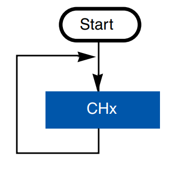

Kurs STM32
Wojciech Olech
Część VII: Przetwornik analogowo-cyfrowy (ADC)
ADC
ADC (przetwornik analogowo-cyfrowy) służy do odczytywania napięcia analogowego i konwersji jego wartości na liczbę, w celu jej przetworzenia.
Najważniejsze charakterystyki ADC to:
- Rozdzielczość - wyrażana w bitach, im większa tym lepiej ponieważ pozwala na dokładniejszy odczyt.
- Maksymalna szybkość samplowania (czas samplowania) - im szybciej, tym lepiej, ale zazwyczaj wraz ze wzrostem szybkości tracimy dokładność pomiaru
Dodatkowo, czasami ma również znaczenie nieliniowość i szumy przetwornika.
Popularne rodzaje przetworników ADC
- Direct-conversion (flash) ADC: Składa się z komparatorów samplujących sygnał równolegle. Bardzo szybki (sample rate mierzony w GHz), ale wymaga dużej ilości komparatorów (2N−1), ma dużą pojemność wejściową, wymaga dużo mocy i jest podatny na błędy.
- Successive approximation (SAR) ADC: Działa na zasadzie sukcesywnej komparacji wartości wejściowej z wartością generowaną przez wewnętrzne źródło sygnału (DAC) krok po kroku. Wejściowy sygnał jest porównywany z generowanymi przez DAC wartościami, które z kolei są generowane na podstawie uprzednio zmierzonych wartości zaczynając od 21Vref.

- Przetwornik Sigma-delta (ΣΔ) - modulatory sigma-delta generują impulsy o częstotliwości proporcjonalnej do napięcia wejściowego, a następnie je zliczają, co pozwala otrzymać wartość liczbową. Charakteryzują się one niskim szumem i wysoką dokładnością pomiarów.
Każdy przetwornik analogowo-cyfrowy wymaga do działania napięcia wejściowego i napięcia referencyjnego (lub kilku napięć referencyjnych). Napięcie referencyjne określa maksymalną (lub minimalną, w przypadku bipolarnych przetworników) wartość napięcia jaką dany przetwornik może zmierzyć, oraz jego dokładność (a co za tym idzie, błąd kwantyzacji)
Rozdzielczość napięciową przetwornika określa się wzorem Vres=Vref⋅2−n, gdzie Vref to napięcie referencyjne, a n to rozdzielczość przetwornika.
Przykładowo, dla 8-bitowego przetwornika ADC z napięciem referencyjnym 5V rozdzielczość napięciowa będzie wynosić Vres=5⋅2−8=5⋅10241≈4.9mV
Oznacza to, że najmniej znaczący bit (LSB) ma wagę około 4.9mV, czyli przetwornik może mierzyć wartości z krokiem 4.9mV. Jeśli podamy mu do zmierzenia wartość 100mV, to zwróci wartość 20, co po ponownym przeliczeniu na napięcie będzie wynosić 20⋅4.9mV=98mV, co daje nam błąd kwantyzacji o wielkości 2mV dla tego pomiaru.
Błąd kwantyzacji można zmniejszyć zwiększając rozdzielczość napięciową poprzez zmniejszanie napięcia referencyjnego lub zwiększanie ilości bitów.
W mikrokontrolerach STM32 najczęściej używany jest przetwornik z sukcesywną aproksymacją (SAR) o maksymalnej rozdzielczości 12 bitów. Wyjątkiem jest seria STM32F37x, gdzie jest używany przetwornik z modulacją Sigma-Delta o maksymalnej rozdzielczości 16 bitów.
ADC w STM32 może mierzyć napięcie w dwóch trybach: single-ended i differential.
Tryb single-ended mierzy wartość z użyciem jednego kanału, pomiędzy nim a Vref
Tryb differential mierzy napięcie pomiędzy dwoma kanałami.
Konfiguracja ADC w Device Managerze
Żeby włączyć przetwornik ADC w Device Managerze, należy w zakładce "Analog" włączyć interesujące nas kanały. Można sprawdzić który pin należy do danego kanału konkretnego ADC poprzez kliknięcie na niego w widoku pinoutu, ale zmiana trybu pinu w tym widoku nie włączy danego kanału, nadal należy to zrobić w konfiguracji ADC.
Ustawienia ADC
Po skonfigurowaniu jednego z kanałów ADC możemy zmienić jego ustawienia.
- Clock Prescaler - preskaler zegara jakim będzie taktowany cały ADC (nie pojedynczy kanał). Im większy, tym wolniej będzie przebiegał pomiar. Asynchroniczny preskaler pozwala na taktowanie ADC innym zegarem niż HCLK (główny zegar mikrokontrolera), synchroniczny preskaler wymusza taktowanie ADC zegarem HCLK.
- Resolution - rozdzielczość bitowa ADC, im mniejsza tym szybciej następuje konwersja pomiarów przez SAR, dzięki czemu rośnie częstotliwość próbkowania.
- Continuous Conversion Mode - możemy skonfigurować ADC żeby zapętlił próbkowanie, co spowoduje że po rozpoczęciu pomiaru będzie on wykonywany w kółko do momentu jego ręcznego zatrzymania.
- Overrun behaviour - jeśli dane z aktualnego pomiaru nie zostaną odczytane przez procesor przed rozpoczęciem nowego pomiaru, nastąpi overrun. Możemy wybrać czy po jego nastąpieniu stare dane mają zostać zachowane czy nadpisane.
- Enable Regular Oversampling - niektóre serie STM32 mają wbudowane w ADC oversamplery które mierzą analogową wartość kilkukrotnie a następnie ją obrabiają (na przykład uśredniają), co przekłada się na dokładniejsze pomiary. To pole aktywuje oversampler.
- Number of Conversions - ilość konwersji przeprowadzanych przez ADC. Należy pamiętać żeby ją zwiększyć i każdą konwersję (Rank) odpowiednio skonfigurować, ponieważ jeśli tego nie zrobimy to domyślnie ADC wykona tylko jedną konwersję na pierwszym skonfigurowanym przez nas kanale.
- Rank - tutaj możemy skonfigurować kanał (Channel) i czas samplowania (Sampling Time).
Zadanie 1: Pomiar wewnętrznej temperatury mikrokontrolera
Na start, zmierzymy wartość czujnika temperatury wbudowanego w mikrokontroler. W konfiguracjach ADC szukamy checkboxa Temperature Sensor Channel i go zaznaczamy.
Czujnik temperatury jest dość specyficznym elementem procesora z kilku powodów
- Zwraca on temperaturę wewnątrz opakowania. Oznacza to że nie możemy go wykorzystać do pomiaru temperatury otoczenia. Jest on również dość niedokładny.
- Wymaga odpowiedniego czasu pomiaru żeby uzyskać poprawną temperaturę.
W niektórych mikrokontrolerach, w bibliotekach HALa znajdują się makra które umożliwiają konwersję napięcia na temperaturę. Wartości kalibracyjne czujnika są zapisane w pamięci mikrokontrolera na etapie jego produkcji. W przypadku STM32F401 nie mamy tych makr, dlatego będziemy musieli wykonać konwersję ręcznie.
Wymagania dotyczące timingów oraz adresy wartości kalibracyjnych można znaleźć w datasheecie mikrokontrolera (sekcje "Temperature Sensor Characteristics" oraz "Analog to digital converter (ADC) -> Temperature sensor")
Zaczniemy od zebrania czystych danych z czujnika. W tym celu, musimy skonfigurować ADC żeby czas samplowania był większy lub równy czasowi podanemu w datasheecie.
Na stronie 112 datasheeta (https://www.st.com/resource/en/datasheet/stm32f401re.pdf) można znaleźć charakterystyki czujnika temperatury. Interesuje nas w tej chwili TS_temp=10μs - minimalny czas samplowania pomiaru. Czas uruchamiania kanału tSTART nas nie interesuje, ponieważ HAL się nim zajmuje.
Żeby uzyskać ten minimalny czas samplowania pomiaru, musimy odpowiednio dobrać ilość cykli w których ADC będzie mierzyć wartość czujnika.
Czas trwania jednego cyklu jest czasem jednego taktu zegara ADC. ADC taktowany jest zazwyczaj dzielonym zegarem APB do którego jest podłączony - w przypadku STM32F401RE jest to PCLK2.
PCLK2 domyślnie skonfigurowany jest na częstotliwość 84MHz - należy to sprawdzić w zakładce drzewa zegarów Device Configuratora, a w ustawieniach ADC ma preskaler ustawiony na 4, co oznacza że częstotliwość ADC będzie wynosić 21MHz, ergo jeden cykl potrwa 47.6ns. Żeby uzyskać czas samplowania większy niż 10μs, potrzebujemy co najmniej
47.6ns10μs=211 cykli
Na ilość cykli jednej konwersji składa się ilość cykli wybranych w danym kanale + stała ilość cykli zależna od skonfigurowanej rozdzielczości ADC. Tą drugą informację można znaleźć w reference manualu procesora, lub CubeMXie, gdzie jest nieco przekłamana ponieważ CubeMX podaje o 3 cykle za dużo (15 cykli dla 12-bit ADC to 12 cykli dla wybranej rozdzielczości, + minimalna ilość cykli konwersji, czyli 3)
Jeśli chcemy mierzyć wartość temperatury z rozdzielczością 12 bitów, to musimy w naszym przypadku skonfigurować kanał ADC na minimum 199 cykli. Najbliższa ilość cykli większa od 199, którą możemy skonfigurować, to 480.
Ta ilość cykli bardzo odstaje od naszego obliczonego minimum, dlatego jeśli chcielibyśmy skorzystać z mniejszej ilości cykli, musimy zmniejszyć częstotliwość ADC, zwiększając dzielnik lub zmniejszając częstotliwość zegara PCLK2. Nam jednak nie robi to różnicy, więc zostawiamy to w ten sposób.
Możemy teraz przejść do pisania kodu.
Na start, spróbujemy odczytać wartość temperatury w trybie polling. Żeby wykonać pomiar ADC należy w tym przypadku skorzystać z funkcji HAL_ADC_Start do której podajemy adres uchwytu do struktury ADC.
Następnie, możemy sprawdzić czy ADC zakończył konwersję poprzez odczyt flagi ADC_FLAG_EOC za pomocą makra __HAL_ADC_GET_FLAG, lub zaczekać na koniec konwersji z użyciem funkcji HAL_ADC_PollForConversion
Następnie, odczytujemy wartość za pomocą funkcji HAL_ADC_GetValue
Poniższy kod co sekundę będzie mierzyć i wyświetlać wartość z ADC podłączonego do czujnika temperatury.
/* USER CODE BEGIN WHILE */ uint32_t temperatureRaw = 0; while (1) { /* USER CODE END WHILE */ /* USER CODE BEGIN 3 */ HAL_ADC_Start(&hadc1); HAL_ADC_PollForConversion(&hadc1, HAL_MAX_DELAY); temperatureRaw = HAL_ADC_GetValue(&hadc1); printf("Temperature sensor raw value: %ld\n", temperatureRaw); HAL_Delay(1000); } /* USER CODE END 3 */
Żeby przekonwertować tą wartość na temperaturę, musimy ją najpierw zamienić na napięcie. Wiedząc że Vref=3.3V, a rozdzielczość ADC Ares wynosi 12 bitów (co można sprawdzić również w kodzie, z użyciem makra ADC_GET_RESOLUTION), wystarczy skorzystać z następującego wzoru:
Vmeasured=2Ares−1raw value⋅Vref
float convertRawValueToVoltage(uint32_t rawValue) { return ((float) rawValue / 4095.f) * 3.3f; }
Następnie, można wykonać aproksymację temperatury na dwa sposoby.
W datasheecie procesora, mamy podane następujące wartości
- Average slope - ilość zmerzonych milivoltów per stopień celcjusza na czujniku
- Voltage at 25*C - napięcie na czujniku przy 25 stopniach celcjusza
- Temperature sensor calibration values - adresy wartości kalibracyjnych, czyli napięć zmierzonych na czujniku podczas produkcji, przy 30*C i 110*C, które zostały zapisane na stałe w pamięci procesora
My skorzystamy z average slope i voltage at 25*C. Będzie to potencjalnie mniej dokładne niż użycie wartości kalibracyjnych, ale łatwiejsze w zastosowaniu.
W przypadku STM32F401RE, average slope wynosi 2.5mV/*C, a napięcie przy 25*C wynosi 0.76V
Napiszemy więc następującą funkcję która zamieni napięcie na temperaturę i przetestujemy ją w praktyce:
Tcpu=AvgSlope(Vmeasured−V25)+25
float const avgSlope = 0.025; // Average slope [V] float const voltageAt25 = 0.76; // Temperatura przy 25*C [V] float convertVoltageToTemperature(float voltage) { return ((voltage - voltageAt25) / avgSlope) + 25.f; }
Nasza finalna pętla programu może wyglądać tak
// /* USER CODE BEGIN WHILE */ uint32_t temperatureRaw = 0; float temperatureVoltage = 0.f; float cpuTemperature = 0.f; while (1) { /* USER CODE END WHILE */ /* USER CODE BEGIN 3 */ HAL_ADC_Start(&hadc1); HAL_ADC_PollForConversion(&hadc1, HAL_MAX_DELAY); temperatureRaw = HAL_ADC_GetValue(&hadc1); temperatureVoltage = convertRawValueToVoltage(temperatureRaw); cpuTemperature = convertVoltageToTemperature(temperatureVoltage); printf( "Temperature sensor raw value: %ld, voltage: %.3fV, temperature: %.3f*C\n", temperatureRaw, temperatureVoltage, cpuTemperature); HAL_Delay(1000); } /* USER CODE END 3 */
Pomiar ADC w trybie przerwań
Pomiar w trybie przerwań nie różni się metodologią od trybu polling, jedyna różnica jest taka, że wywołuje przerwanie na końcu, więc nie blokuje programu. Uruchamiamy pomiar w trybie przerwań za pomocą HAL_ADC_Start_IT i musimy pamiętać żeby włączyć globalne przerwanie ADC w Device Configuration Toolu, żeby HAL mógł obsłużyć przerwanie ADC i wywołać odpowiedni handler.
Handlery wywoływane przez HALa są następujące:
void HAL_ADC_ConvCpltCallback(ADC_HandleTypeDef* hadc); // Koniec konwersji void HAL_ADC_ConvHalfCpltCallback(ADC_HandleTypeDef* hadc); // Połowa konwersji skończona void HAL_ADC_LevelOutOfWindowCallback(ADC_HandleTypeDef* hadc); // Zmierzona wartość jest poza zakresem (?) void HAL_ADC_ErrorCallback(ADC_HandleTypeDef *hadc); // Błąd ADC
Cykliczny pomiar temperatury z użyciem timera
ADC posiada wbudowaną funkcjonalność wykonywania pomiaru na podstawie zewnętrznego triggera. Tym triggerem może być event zegara, na przykład Capture Compare, lub bezpośrednio Trigger Output (czyli wyjście zegara-mastera).
ADC w STM32F401 możemy taktować na przykład za pomocą wyjścia timera 2 lub 3. Timer należy skonfigurować z odpowiednim preskalerem i counterem (nie musimy konfigurować kanałów, chyba że korzystamy z trybu capture compare) a w ustawieniach ADC należy w External Trigger Conversion Source wybrać opcję Timer 2 Trigger Out event. Należy się też upewnić, żeby cykliczny pomiar w ustawieniach ADC był wyłączony, ponieważ jeśli tego nie zrobimy to timer wywoła tylko start pomiaru który potem będzie działał samodzielnie.
Przykładowo, skonfigurujmy TIM2 na 1-sekundowe cykle UEV (przy zegarze 84MHz można w tym celu ustawić preskaler na 41999 i counter na 1999), oraz w sekcji Trigger Output (TRGO) Parameters zmieńmy Trigger Event Selection na Update Event, żeby timer wyzwalał trigger na podstawie UEV. W ustawieniach ADC włączmy obsługę przerwań i przejdźmy do kodu.
W kodzie musimy jedynie przenieść odczyt wartości z ADC oraz jej konwersję na temperaturę do handlera HAL_ADC_ConvCpltCallback, oraz uruchomić timer i ADC w trybie przerwań.
void HAL_ADC_ConvCpltCallback(ADC_HandleTypeDef *hadc) { temperatureRaw = HAL_ADC_GetValue(hadc); temperatureVoltage = convertRawValueToVoltage(temperatureRaw); cpuTemperature = convertVoltageToTemperature(temperatureVoltage); printf( "Temperature sensor raw value: %ld, voltage: %.3fV, temperature: %.3f*C\n", temperatureRaw, temperatureVoltage, cpuTemperature); HAL_GPIO_TogglePin(LD2_GPIO_Port, LD2_Pin); } // [...] // W funkcji main: /* USER CODE BEGIN 2 */ HAL_TIM_Base_Start(&htim2); HAL_ADC_Start_IT(&hadc1);
Tryby pracy ADC
ADC ma kilka różnych trybów pracy, do tej pory korzystaliśmy z jednego - trybu pojedynczej konwersji. W dokumencie opisującym tryby pracy ADC w STM32 (link na ostatnim slajdzie) jest przedstawiona pełna lista możliwości, z których opiszę najczęściej używane
Grafiki użyte w poniższych slajdach są wzięte z wspomnianego PDFa
Single-channel, single-conversion
Ten tryb już poznaliśmy, polega na wykonaniu pojedynczego pomiaru na jednym kanale.
Multichannel, single conversion (scan mode)
Ten tryb pozwala na wykonanie jednorazowego pomiaru kilku kanałów po kolei.
Jeśli mikrokontroler na to pozwala, można wybrać kolejność mierzonych kanałów - pomiar jest wykonywany od Rank 1, do Rank n, ale można określić który kanał jest mierzony w danym ranku. Zazwyczaj można też określić ilość cykli dla każdego ranka osobno, a czasami też ilość pomiarów każdego ranka.

Single-channel, continuous mode
Ten tryb pozwala na cykliczne wykonywanie pomiarów jednego kanału (bez użycia timera). Kolejny pomiar automatycznie jest wykonywany po zakończeniu poprzedniego, do momentu ręcznego zatrzymania pomiarów.
Multichannel, continuous mode
Jak sama nazwa wskazuje, ten tryb pozwala na cykliczny pomiar kilku kanałów. Tak samo jak w trybie single-channel continuous, po zakończeniu pomiaru automatycznie wykonuje się następny.
Injected conversion
Ten tryb pozwala kanałom które są w nim skonfigurowane wykonać pomiary z wyższym priorytetem niż normalnie. Oznacza to, że pomiar w trybie injected zatrzyma aktualnie wykonywany przez ADC pomiar, wykona się, a potem wznowi działanie ADC w trybie normalnym. Wstrzykiwanie pomiarów może odbyć się software'owo, na podstawie timera lub zewnętrznego przerwania.
Wywoływanie konwersji zewnętrznym przerwaniem
ADC w STM32F401 ma do dyspozycji dwie linie przerwań zewnętrznych (EXTI) do triggerowania pomiarów.
Wybranie opcji "External trigger for injected conversions" umożliwi wykonywanie wstrzykiwanych pomiarów po wykryciu przerwania na linii EXTI15, a "External trigger for regular conversion" umożliwi wykonanie pomiarów standardowych po wykryciu przerwania na linii EXTI11.
Te tryby uniemożliwiają uruchamianie pomiarów software'owo (za pomocą funkcji ADC, bo można to "oszukać" przez ręczne wywoływanie przerwań EXTI) oraz za pomocą timerów.
Pomiar ADC z użyciem DMA
ADC jest peryferium które ma bardzo dobrą kompatybilność z DMA, które pozwala łatwo stosować zaawansowane tryby pracy konwertera, dlatego pozostałe funkcjonalności przedstawię na przykładach z używaniem DMA.
DMA pozwala na łatwe używanie ADC w trybie konwersji wielokanałowej, oraz umożliwia bardzo wysokie częstotliwości wykonywania pomiarów bez obciążania procesora, co w trybie przerwań bywa niemożliwe ze względu na obciążenie procesora przez obsługę ADC.
Kilkukrotne próbkowanie kanału z uśrednianiem - case study
Zaczniemy od wykorzystania DMA do wielokrotnego próbkowania kanału i obliczania średniej z pomiarów.
W tym celu, wystarczy z odpowiednio skonfigurowanym ADC uruchomić konwersję DMA z odpowiedniej wielkości buforem.
Żeby DMA miało się czym zająć podczas obróbki danych z pomiaru, załóżmy że będziemy pobierać taką ilość próbek, która zajmie stosunkowo dużo czasu. Wiedząc że pojedynczy cykl przy taktowaniu ADC 21MHz trwa 47.6ns, i że jeden pomiar zajmuje 492 cykli, możemy obliczyć że pojedynczy pomiar temperatury trwa 23.4μs. W 1 ciągu 1 milisekundy możemy więc wykonać 42 pomiary. Uznajmy że jest to dobra wartość jako ilość pomiarów do uśrednienia.
Jeden pomiar z ADC zajmuje 12 bitów, ale nie możemy wysłać 12 bitów po żadnej magistrali danych, więc będziemy wysyłać 16-bitowe wartości gdzie 4 ostatnie bity będą nieużywane. Do komunikacji użyjemy UARTa.
Musimy dobrać odpowiedni baud rate UARTa w celu wysyłania pomiarów - za mały baud rate będzie wąskim gardłem, które spowoduje że będziemy tracić dane z pomiarów.

Zakładając że będziemy wysyłać 2-bajtową próbkę co milisekundę, będziemy potrzebowali szybkości transmisji równej minimum 2kB/s. Wiedząc że baud rate UARTa jest podany w bitach na sekundę i zakładając że jedna ramka UARTa ma wielkość 8 bitów na dane + 1 stop bit + 1 start bit, co daje 10 bitów na ramkę, nasz baud rate musi wynosić minimum 10 * 2048 = 20480bps.
Domyślny baud rate (115200bps) umożliwia w tej konfiguracji transfer z prędkością 11.520kbps, co jest dla nas w zupełności wystarczające. Wysyłanie bajtu co milisekundę nie będzie też mocno obciążać procesora, więc użyjemy UARTa w trybie polling.
Następnie, konfigurujemy DMA dla ADC z domyślnymi ustawieniami.
W ustawieniach parametrów ADC należy włączyć opcję Continuous Conversion Mode, żeby ADC mógł wykonywać pomiary cyklicznie, do momentu zapełnienia bufora.
Możemy przystąpić do pisania kodu. Załóżmy że kod obróbki i wysyłania danych zawrzemy w przerwaniu zakończenia konwersji ADC. Przy 84MHz fCPU, uśrednienie 42 próbek i zapisanie ich do pamięci co milisekundę nie powinno być poważnym obciążeniem.
Przykładowa funkcja obsługi przerwania może wyglądać następująco:
#define ADC_SAMPLES_COUNT 42 // Bufor musi mieć typ uint32_t ze względu na to że taki rodzaj bufora przyjmuje // HAL_ADC_Start_DMA. Wartości w nim będą 16-bitowe. uint32_t temperatureRawBuffer[ADC_SAMPLES_COUNT]; // [...] void HAL_ADC_ConvCpltCallback(ADC_HandleTypeDef *hadc) { uint16_t temperatureRawAvg = 0; for (size_t i = 0; i < ADC_SAMPLES_COUNT; i++) { temperatureRawAvg += temperatureRawBuffer[i]; } temperatureRawAvg /= ADC_SAMPLES_COUNT; HAL_UART_Transmit(&huart2, (uint8_t*) &temperatureRawAvg, sizeof temperatureRawAvg, 1); }
Żeby uruchomić ADC, używamy funkcji HAL_ADC_Start_DMA do której przekazujemy bufor z jego wielkością. DMA go zapełni i wywoła przerwanie końca konwersji.
Jeśli wszystko zrobiliśmy poprawnie, ADC powinien wykonać pojedynczy pomiar 42 próbek, a następnie powinny one zostać uśrednione i wysłane po UART w formie 16-bitowego unsigned inta. Można zobaczyć tą wartość z użyciem RealTerma (w menu Display As należy wybrać opcję uint16)
Ciągły pomiar kanału z uśrednianiem
Żeby mierzyć wartości z ADC w trybie ciągłym, wystarczy zmienić tryb DMA na cykliczny (circular) i w ustawieniach ADC włączyć opcję DMA Continuous Requests, żeby DMA był powiadamiany o każdym zakończeniu cyklu pomiarowego.
Efekt powinien być następujący:
Scan Mode
Tryb skanu, to tryb w którym ADC wykonuje pomiary wszystkich skonfigurowanych ranków po kolei. Jeśli używamy DMA to wyniki pomiarów zostają od razu skopiowane do bufora. Można łączyć ten tryb z poprzednio opisanymi dwoma trybami (ciągły pomiar i pomiar n próbek).
Żeby włączyć tryb skanu, należy aktywować więcej niż jeden kanał, zwiększyć ilość wykonywanych pomiarów w opcji Number Of Conversions i skonfigurować każdy z ranków (wybrać odpowiedni kanał i czas samplowania)
Następnie należy stworzyć bufor o wielkości Ilosˊcˊ kanałoˊw⋅Ilosˊcˊ pomiaroˊw ktoˊre chcemy wykonacˊ w jednym przebiegu i uruchomić cykl pomiarowy.
Dodatkowe materiały
Reference Manual do serii mikrokontrolera którego używamy
Tryby pracy ADC w STM32: https://www.st.com/content/ccc/resource/technical/document/application_note/c4/63/a9/f4/ae/f2/48/5d/CD00258017.pdf/files/CD00258017.pdf/jcr:content/translations/en.CD00258017.pdf
Jak uzyskać jak najlepszą dokładność przetwarzania oraz szczegółowy opis pracy przetwornika ADC w STM32: https://www.st.com/content/ccc/resource/technical/document/application_note/group0/3f/4c/a4/82/bd/63/4e/92/CD00211314/files/CD00211314.pdf/jcr:content/translations/en.CD00211314.pdf
Tryby pracy ADC w STM32F30x: https://www.st.com/content/ccc/resource/technical/document/application_note/48/64/0d/61/be/65/48/ae/DM00069390.pdf/files/DM00069390.pdf/jcr:content/translations/en.DM00069390.pdf
Przetwarzanie audio z użyciem STM32L4: https://www.st.com/content/ccc/resource/technical/document/application_note/group0/24/d3/31/a0/9d/5a/4a/de/DM00367673/files/DM00367673.pdf/jcr:content/translations/en.DM00367673.pdf